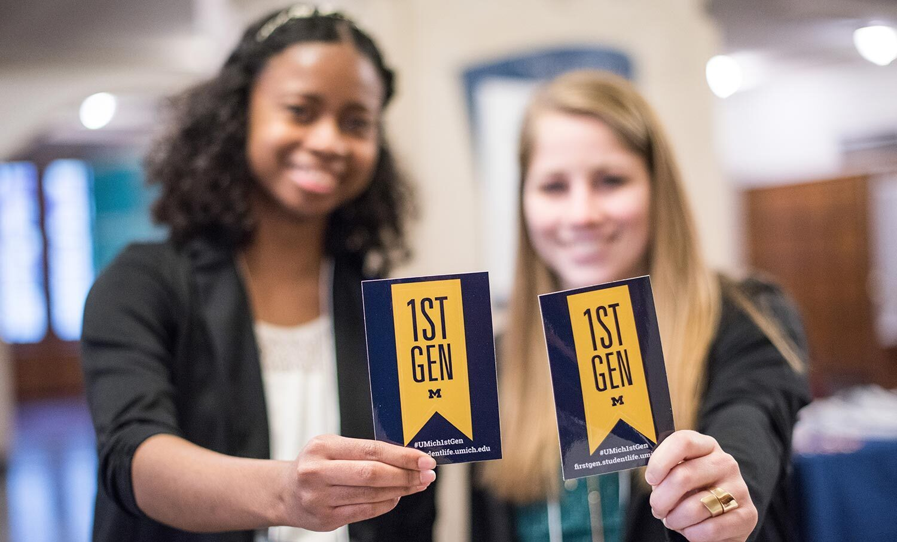
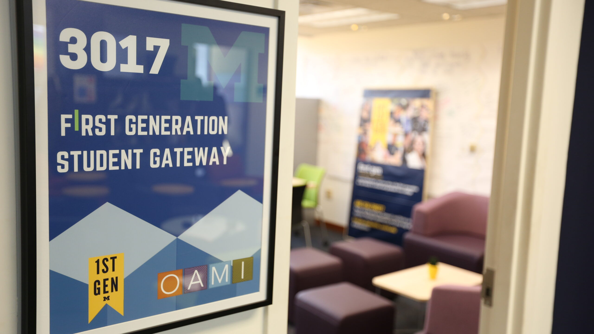

At the University of Michigan, undergraduates and graduate students are considered first-generation college students if:
neither parent nor guardian has completed a 4-year college or university degree.

Celebrating 1st Gen Students!
Getting Started as a First Gen
First-Gen Gateway
The First Generation Student Gateway serves as a starting point to get connected to resources for first-generation students.
Housed in the Office of Academic Multicultural Initiatives (OAMI), the Gateway is linked to several partner offices and is a home for support for first-generation students.
Gateway is open during regular business hours (8 AM-5 PM). You can use the space for:
Finding resources for first-generation students
Connecting to partner offices that support first-generation students
Meeting with First Generation Project Manager Terra Molengraff
Study space
Meeting space

Proud to be U-M First Gen!
Resources for First Gen Students
Explore the different resources available for First Generation Students:
First-Generation Gateway Hours and Location:
Summer Hours: Monday – Friday 9:00 AM – 3:00 PM
Location: Third floor of the Student Activities Building in the Office of Academic Multicultural Initiatives (OAMI).